現在科技技術非常的進步，誰能掌握先機就能有更多的條件與機會，現在隨手可見「智慧型手機」及「平板電腦」，還有很多免費的雲端空間可供使用，不知道大家有沒有想過要如何整合這些「技術」、「設備」及「軟體」呢！
Autodesk之前在AutoCAD增加了AutoCAD WS，讓使用者可以上傳到Autodesk網路空間，而且也可以在「智慧型手機」及「平板電腦」存取檢視這些DWG檔案，甚至還可以在AutoCAD WS線上修改DWG檔，這門技術真的讓我們這些老用戶大開眼界，在外還可以透過「智慧型設備」檢視DWG檔案，真的是非常的方便。
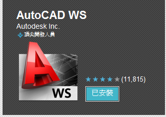
註：AutoCADR WS
是一款移動CAD 應用程序，利用它可以在Android手機或平板電腦上自由靈活查看、編輯和共享DWG文件。
Android手機App下載： https://play.google.com/store/apps/details?id=com.autodesk.autocadws#?t=W251bGwsMSwxLDUwMSwiY29tLmF1dG9kZXNrLmF1dG9jYWR3cyJd
現在Autodesk推出一項全新的免費「雲端服務」，讓使用者可以把DWF格式檔案上傳到Autodesk 360（之前為Autodesk Cloud），上傳及使用方式類似於AutoCAD WS，不過DWF格式檔純粹只為了展示圖面而用（無法修改），可以透過電腦網路存取這些DWF檔，亦可將這些檔案設定為「公開」，讓您的業主或客戶自由下載DWF檔（範例檔），Autodesk 360不只可以存取2D DWG圖面，還可以檢視3D DWG效果圖，另外，還可以在您的「智慧型設備」下載安裝Design Review mobile，即可隨時隨地透過網路向業主或客戶展示，節省了紙張及繁重的電腦設備（投影機）。
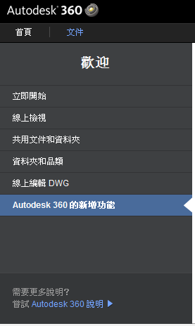
Autodesk Cloud 文件現在已成爲 Autodesk 360！
我們已經變更了名稱，以反映這裡就是您存取所有 Autodesk 360 功能的中心點。您可以存取先前提供給您的所有功能，包含儲存、協同作業和檢視。此外，您現在還可以使用本網站，探索並連接至日益增加的各項雲端服務，大幅改變您的工作方式。
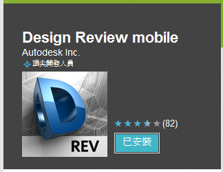
註：Design Review mobile
透過Autodesk Design Review，直接在你的智慧型手機或平板電腦，檢視歐特克二維和三維設計文件審查。
Android手機App下載： https://play.google.com/store/apps/details?id=com.autodesk.ADRViewer#?t=W251bGwsMSwxLDUwMSwiY29tLmF1dG9kZXNrLkFEUlZpZXdlciJd
圖層：可以更改是否保留「圖層資訊」。
youku頻道： http://v.youku.com/v_show/id_XMzczNTQwOTI4.html
3DDWFPREC系統變數：控制3D DWF發佈的精確度。
youku頻道： http://v.youku.com/v_show/id_XMzczNTM2NjI4.html
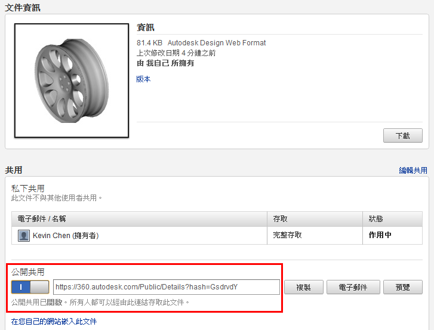
▲DWF檔案下載： https://360.autodesk.com/Public/Details?hash=GsdrvdY
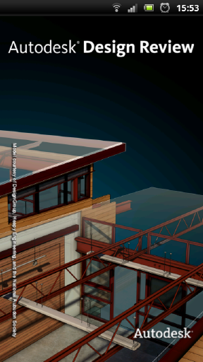
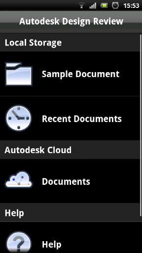
■Design Review mobile展示（使用者雲端檔案）
youku頻道： http://v.youku.com/v_show/id_XMzczNTM5MTMy.html
■Design Review mobile展示（Sample檔案）
youku頻道： http://v.youku.com/v_show/id_XMzczNTM4NTA0.html
2012-03-29補充說明：
要享受這個服務，的確需要有「智慧型設備」！
另外，沒有「網路」也可以使用「智慧型設備」檢視DWF檔案！
1.可以先在有網路的地方，存取Autodesk 360 線上的DWF檔案
→
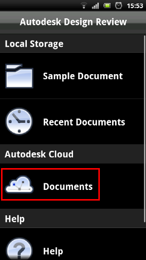
2.在Autodesk Cloud(雲端)選擇檔案後，即可下載倒您的「智慧型設備」中
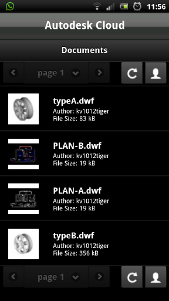
3.在外面沒有網路時，只需要點選下載的資料夾
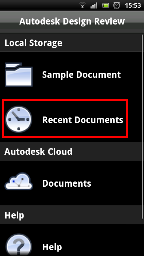
4.瀏覽「智慧型設備」中的DWF檔案（無需網路服務）
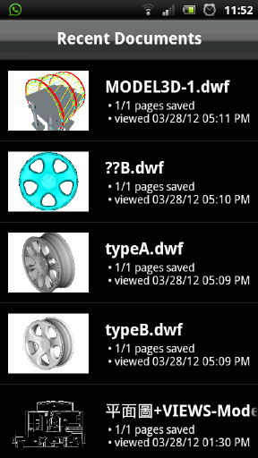
→
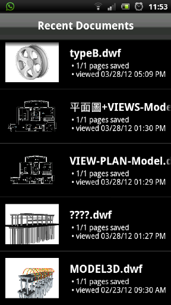
5.即可正常預覽展示3D效果圖
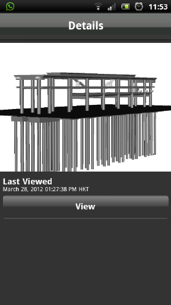
→
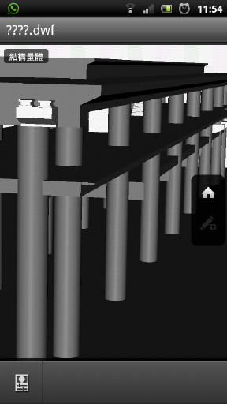